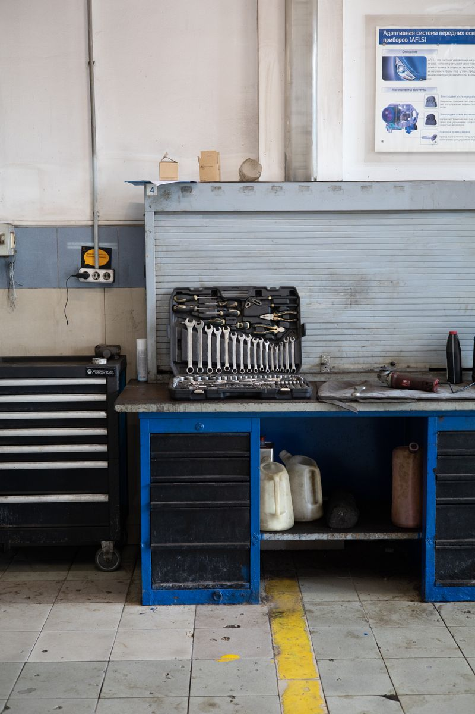
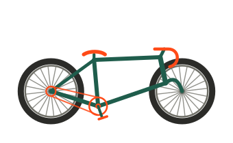
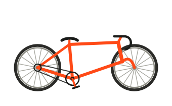
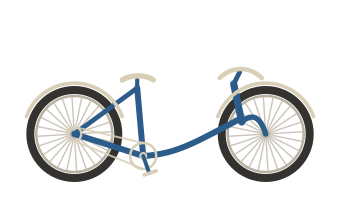
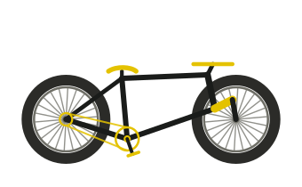
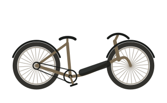
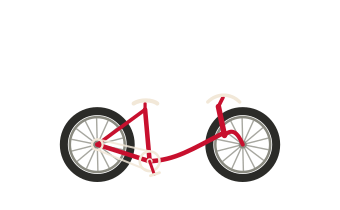
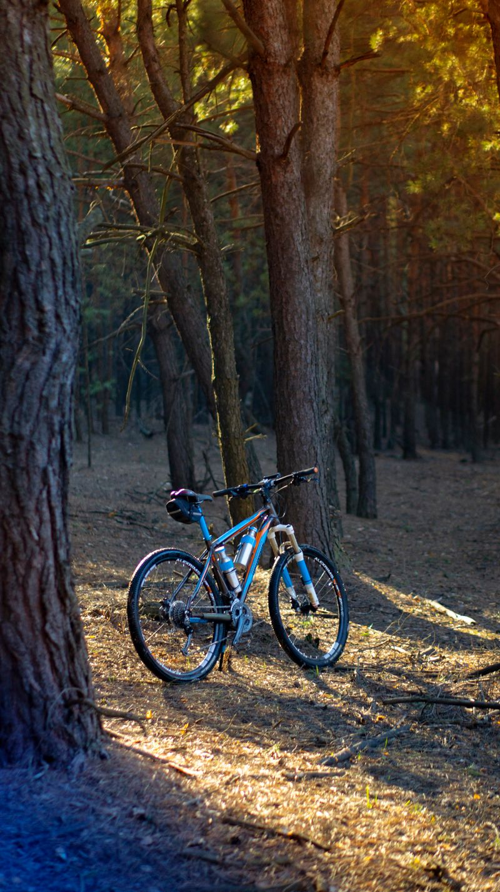
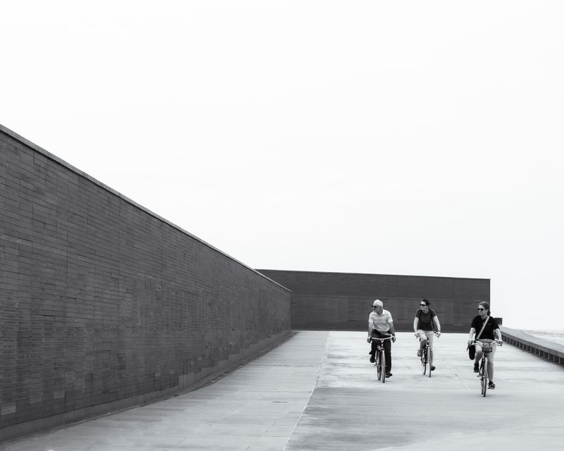

Ourense · tienda y taller · desde 2011
Una tienda que se recorre como una etapa
Siete curvas es lo que hay entre la puerta y el alto del Coto. Esta página funciona igual: empieza en el kilómetro cero y termina en la meta, con el perfil ahí abajo para que sepas siempre por dónde vas.
- 0de recorrido en esta página
- 0de desnivel acumulado
- 0años arreglando bicis
km 3 · Taller
Aquí se arregla, no se cambia por sistema
Dos puestos de trabajo y cita previa para que nadie espere de pie. Si una pieza aguanta otra temporada, te lo decimos; si no aguanta, también.
| Trabajo | Precio | Cuánto tarda |
|---|---|---|
| Diagnóstico y presupuesto | 0 € | 10 minutos, en el mostrador |
| Puesta a punto completa | 45 € | 48 h |
| Sangrado de frenos hidráulicos | 30 € | Mismo día |
| Centrado de rueda | 18 € | Mismo día |
| Cambio de cubierta y cámara | 12 € | En el momento |
| Montaje de bici nueva | desde 120 € | 3 a 5 días |

Precios de muestra. En una tienda real dependen de la pieza y de cómo llegue la bici.
km 11 · Las bicis
Seis que tenemos siempre en el suelo
No trabajamos con catálogos de cien modelos. Estas seis las conocemos, las montamos nosotros y sabemos qué se le rompe a cada una.
-

Fisterra
Gravel · cuadro de aluminio · 10,4 kg
Para pistas de tierra y carretera mala. La que más vendemos.
1.190 €
-

Ancares
Carretera · cuadro de carbono · 8,2 kg
Para salir los domingos y subir sin excusas.
2.350 €
-

Ponte
Urbana · paso bajo · guardabarros
Para ir al trabajo sin cambiarte de ropa.
640 €
-

Trevinca
Montaña · horquilla de 120 mm
Para el monte de aquí, que es piedra y raíz.
1.480 €
-

Miño
Eléctrica · batería de 500 Wh · 70 km
Para la cuesta de casa, que en Ourense todas lo son.
1.890 €
-

Airiños
Infantil · rueda de 20" · 8,6 kg
Ligera de verdad, que es lo único que importa a esa edad.
310 €
Modelos, pesos y precios inventados para esta demostración. Los dibujos son propios: no representan a ninguna marca real.
km 19 · Alquiler y rutas
Te dejamos la bici y el mapa
- Media jornada (4 h)18 €
- Día completo28 €
- Fin de semana45 €
- Eléctrica, día completo42 €
- Casco, luces y candadoIncluidos
- Fianza (se devuelve)50 €
-
Ribeira baja
24 km · 180 m · asfalto
Llana, por el río y de vuelta. Se hace en una mañana y hay dónde parar a comer a mitad.
-
Las siete curvas
38 km · 720 m · asfalto
La de la casa. Sube al alto del Coto por las siete curvas que nos dan el nombre y baja por el otro lado.
-
Pista de los castaños
31 km · 540 m · tierra
Para gravel o montaña. Nada técnico, pero con barro de octubre a marzo.

km 27 · El club de los martes
Se sale a las 18:30 y no se deja a nadie atrás
Salimos desde la puerta todos los martes del año, llueva o no. Dos grupos: uno de ritmo tranquilo, entre 22 y 24 de media, y otro que va más rápido. Al primero siempre va alguien de la tienda de escoba, así que no hay manera de perderse.
No hay cuota ni hay que apuntarse a nada. Lo único obligatorio es el casco y traer una cámara de repuesto: si pinchas, paramos todos.
- 18:30salida, todos los martes
- 45 kmde recorrido medio
- 2grupos por ritmo
- 0 €de cuota

km 34 · Quién atiende
Tres, y los tres montan
-
Uxío Barxa
Mecánico · fundador
Abrió la tienda en 2011 con un banco de trabajo y un compresor. Es quien monta las ruedas a mano y quien dice que una pieza aún aguanta.
-
Sabela Pousa
Mecánica · frenos y suspensión
Viene del mundo del descenso. Si algo hace un ruido raro y nadie sabe de dónde sale, se lo dejamos a ella.
-
Antón Regueira
Mostrador · alquiler y rutas
Lleva el alquiler y se sabe todas las pistas de la zona. Es el que va de escoba en el grupo tranquilo de los martes.
Personas inventadas para esta demostración.
km 42 · Llegada
Rúa da Ponte Nova, 5
Comprobando el horario…
Rúa da Ponte Nova, 5 · bajo32003 Ourense
988 00 00 15
hola@setecurvas.example
- Martes a viernes
- 10:00–14:00 · 16:30–20:00
- Sábado
- 10:00–14:00
- Domingo y lunes
- Cerrado
Bajo a pie de calle, con rampa para entrar la bici sin levantarla. Hay aparcamiento de bicis en la puerta y la estación de autobuses queda a diez minutos andando.
El mapa se carga solo si lo pides: hasta entonces esta web no llama a ningún servidor de terceros.